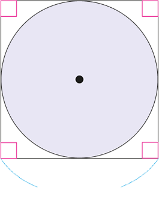
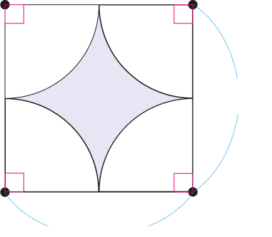

색칠한 부분의 넓이를 비교하여
안에
 ,
,
 ,
,
 중 알맞은 것을 써넣으세요.
중 알맞은 것을 써넣으세요.

12 ㎝

12 ㎝
12 ㎝
해설
(왼쪽 색칠한 부분의 넓이)
=6×6×3.14=113.04 (㎠)
(오른쪽 색칠한 부분의 넓이)
=(한 변의 길이가 12 ㎝인 정사각형의
넓이)-(반지름이 6 ㎝인 원의 넓이)
=12×12-6×6×3.14
=144-113.04=30.96 (㎠)
➔ 113.04>30.96